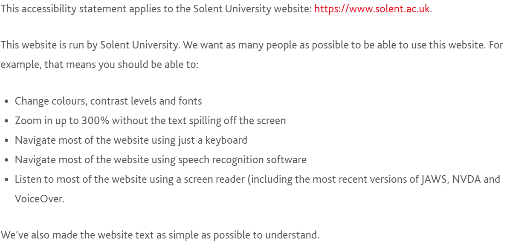
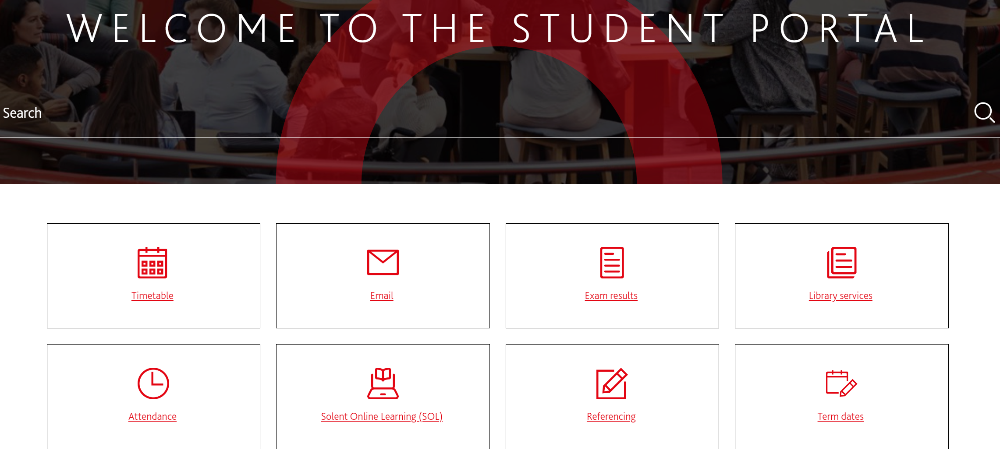
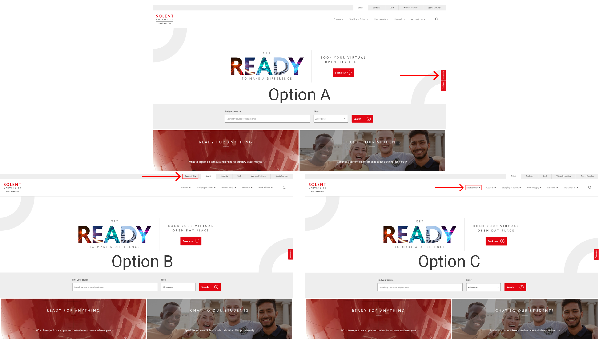
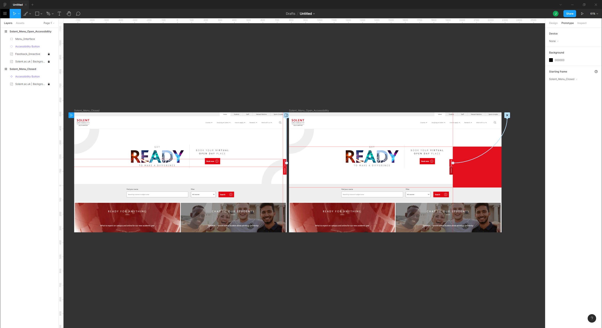
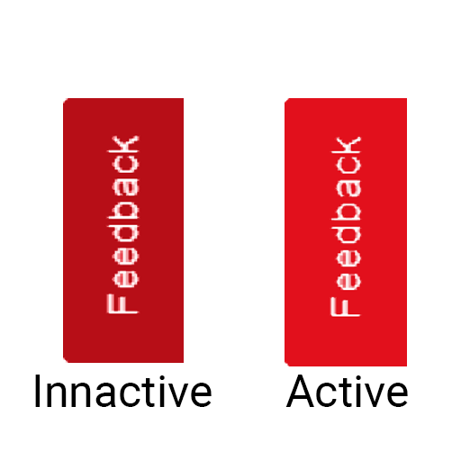
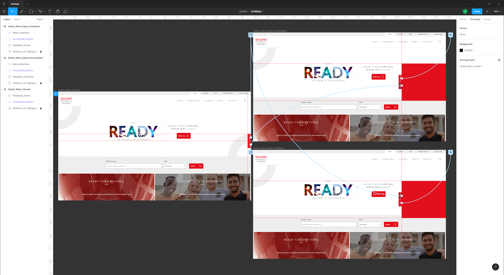
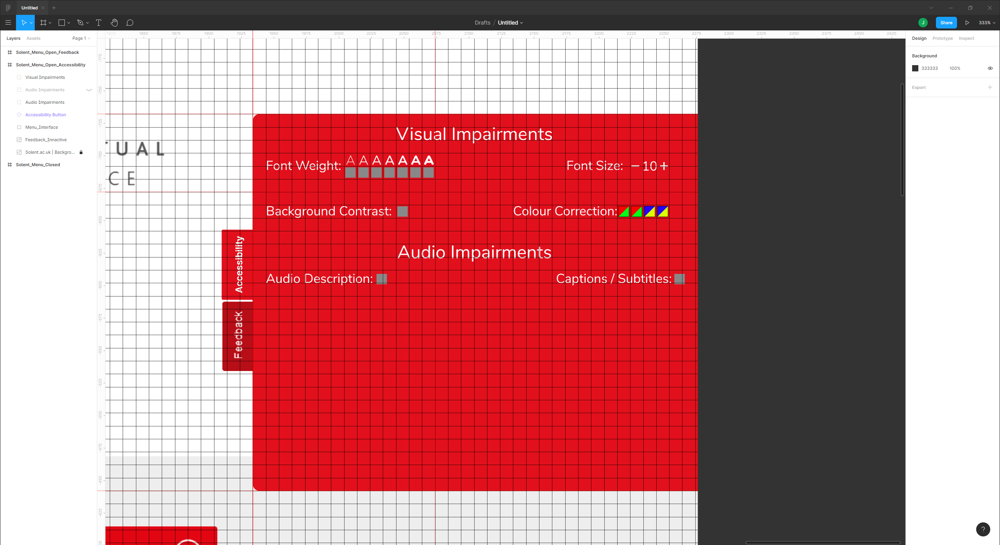
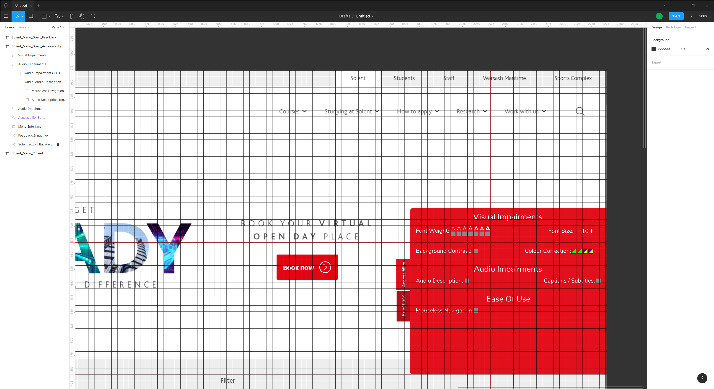
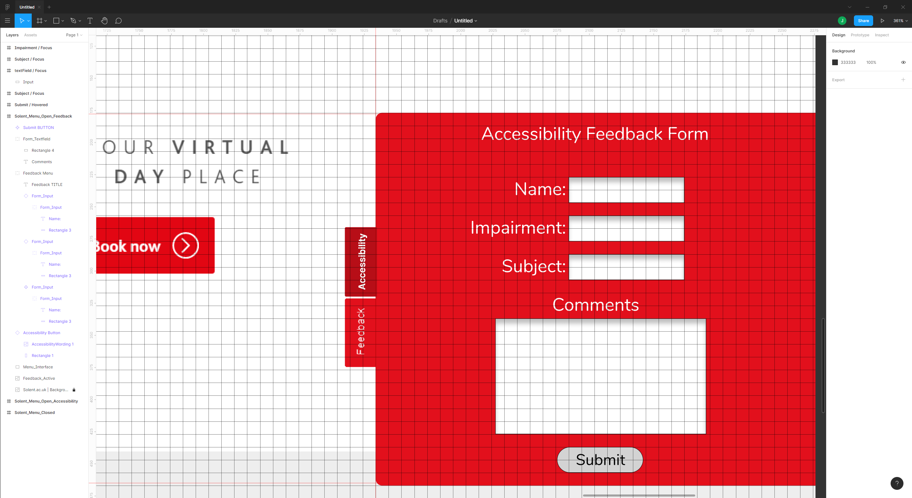
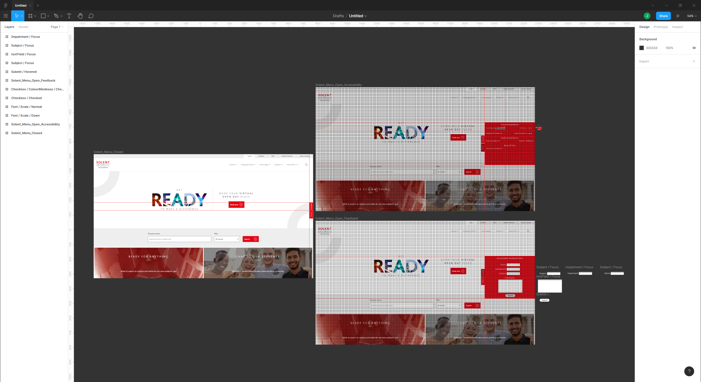

By Jordan Da Graca
Web accessibility standards are universally lacklustre, varying greatly in the degree to which they provide access to individuals with impairments that render normal web-browsing difficult. This design solution aimed to formalize a new standard in web accessibility features. These features would be primarily aimed towards the Solent University website, as this site offers very few internal accessibility features. This case study will document the research process, identifying the target user and their needs, as well as the scope and constraints of this proposed solution.
Solent University has very poor web accessibility support for those who require additional features. Their accessibility documentation (as found here) acknowledges this, saying (Solent University, 2020) “We know some parts of this website are not fully accessible”, and “this website is partially compliant with the Web Content Accessibility Guidelines version 2.1”. This lack of support limits students with additional requirements. Solent University offers a wide range of disability support in other disciplines (such as accommodation, learning support & additional funding), however web accessibility is seemingly neglected, as shown below.
 Disability Support Example DocumentationWhilst Solent University still (barely) adheres to the Web Content Accessibility Guidelines (version 2.1), there is definitely visible room for improvement. The implementation of an accessibility menu within the site should help to improve the overall function of the site, without detracting from the experience those who are fully able to utilise the site will encounter whilst using the Solent University website. The Solent University currently offers partial or no support for the following accessibility features:
As reaffirmed by Forbes (Forbes, 2019) “71% of users with disabilities will leave a website that is not accessible”. Applying this to Solent University could imply a detrimental impact on the ability of impaired students seeking further assistance from their University website, as well as immediately detracting from perspective students accessing the website for the first time. Providing an interactive accessibility menu viewable anywhere on the site will ensure existing students can navigate the entire site unhindered. I aim to document my solution through a detailed breakdown of the design process for this concept.
This design solution solely benefits users of the Solent University website who have additional accessibility needs. Whilst this is the case, this does not limit those affected to only being students or potential students. This benefit would impact all individuals with additional accessibility needs, such as visitors, university staff. The implementation of this change would also benefit the university regarding external organisations such as the QAA (Quality Assurance Agency), responsible for ensuring assistance & help for all students is effective & concise.
Including the ability to provide feedback within the design system also allows continual input from users as to features that require improvements, or entirely new features for consideration, should an individuals impairment not be sufficiently covered by the accessibility tools available. Continually updating the accessibility features also ensures they’re compliant with the relevant requirements, such as the aforementioned ‘Web Content Accessibility Guidelines’.
Depending on the architecture of other websites, this could become something that is developed as a distributable, available for all websites. This would function as a lightweight, standalone addon to a website that allowed developers to immediately have effective & high quality accessiblity tools at their disposal.
To render this design solution successful, it must comprehensively provide accessibility features to those that require them throughout the Solent University website. It must also provide users with the ability to provide feedback & potential improvements. Solent University is an internationally recognised University. Hopefully the implementation of a successful & efficient accessibility menu may prompt similar websites to adopt a similar system, such as University of Southampton, who offer similarly limited accessibility features. Implementing this system across all Solent University websites is ideal, however this doesn't come without its limitations.
This menu must be light-weight and unintrusive, to ensure implementation is efficient and its existence does not obstruct users who do not require its use. The usage of this system would be trackable, with a notable increase in site traffic and interaction being indicatory of a successful system. There are numerous constraints that would limit my ability to provide this system across all Solent University sites. This is mainly owing to the varying development methods present on each site. The structure of solent.ac.uk differs greatly from Solent Online Learning, as do their functions. The former aims to serve as an initial point of contact for both staff & students who quickly navigate to their required areas, and for external site visitors wishing to learn more about the University.
 Solent University Student Portal Accessed directly from Solent.ac.ukInitially deciding upon a program to use this was difficult, between Adobe XD and Figma, both programs had unique advantages and disadvantages over the other Ultimately I decided that Figma was the optimal program to develop this concept. The most important first step was to gain an understanding of where this new accessibility menu would be implemented within the site. This took many forms, as shown below (Indicated with the red outline for clarity). Each option provided access to the menu whilst not impacting the experience for those who would not need access to the settings.
 Trio of mockups for the placement of the accessibility menu buttonAfter getting feedback from my peers, I concluded that the optimal implementation for this menu was beside the red ‘feedback’ button (option A from the above diagram), as this made navigating between the accessibility menu and the feedback page for it as easy as possible. Both buttons are attached to the right side of the page. The next stage was to create two basic versions of the homepage, for the accessibility menu being active and inactive. These were made toggleable using interactions in Figma. This is displayed below.
 Toggleable menu concept created in FigmaAt this stage I felt it was appropriate to utilise the existing feedback button by allowing users to toggle between the accessibility & feedback tabs without having to close and reopen the menu screen. The darker shade of red will be used to imply depth and therefore inactivity. A side by side of this is shown below. Utilising existing elements of the page retains design familiarity with regular users such as staff and students, whilst building on the existing functionality of the feedback button.
Next, I implemented another screen to emulate the feedback menu. Linking each of these together through overlay interactions in Figma provided an insight into how a finished product would function. The next stage was to begin populating these menus with accessibility features and options, and a form to provide feedback on the service. To do this effectively I compared currently missing accessibility features on the Solent University website to what was expected from websites to ensure they were accessible. This was found here. What became clear was that staples of web accessibility such as colour schemes, font sizing, captions and screen readers were essential hallmarks of accessibility, and therefore the most important features to include in my design system.
 Integration of the 'feedback' button into the accessibility feature system.Starting with visual impairments, I then began to populate the accessibility menu with the relevant features necessary. At this stage, these features were purely aesthetic, with the (albeit limited) functionality necessary to demonstrate their intended implementation, being integrated at a later stage. For the first iteration of this design system, four main features for visually impaired individuals were used, whilst some of these are unable to emulate through a Figma prototype, these were the following:
The next step was to implement options for audio impairments. These consisted of toggles for features such as audio description & captions / subtitles. This section was more limited than the visual impairments area, as these impairments are often similar in nature and therefore easier to remedy.
 Implemented audio impairment settingsThe final section of the accessibility menu I implemented was the 'ease of use' section. This term served as a blanket for miscellaneous accesibility features that didn't fit into the two prior categories. The first iteration of this system only features a toggle for users to navigate the site without the use of a mouse. This can be done by appending clear keyboard keys to links, buttons or other website calls to action.
 The 'ease of use' sectionNext, the feedback menu was designed and implemented. This menu would be present 'beneath' the accessibility options and allow users to submit feedback about the available options and also suggest new options to add at a later date. Maintaining a route of communication beteween the developers & the users is key to ensure the finished product is as effective as possible.
 Feedback form successfully implemented.After this, micro-interactions were considered. Some effects (such as audio description) were not demonstratable in a conceptual environment, however the interactions users may take with the feedback form & checkbox toggles could be simulated. Below is an example of this, with form elements demonstrating small changes to enahnce the user experience.
Repeating this process of mimicking micro-interactions then took place on the accessibility menu itself. This process consisted of overlaying the toggle state of a checkbox or switch, when that element was clicked.
At this point the concept was at a point where its entire function was emulated, along with the different options that'd be available to users. From this stage, I then thought forward to the results, and what the overall process had taught Me.
Approaching this design task, I soon began to regret the topic I chose, as I felt it was too complex to do it justice, regardless of the quality of the finished product. Accessibility is one of the most important aspects of modern day web development, with its neglection leading to a clear decline in disabled internet users, reaffirmed by ONS (ONS, 2019) in saying “In 2019, the proportion of recent internet users was lower for adults who were disabled (78%) compared with those who were not disabled (95%).” Solent University caters to “approximately 11,000 students” (Wikipedia, 2020). With that in mind, these students utilize the facilities and online outlets made available by the University. I believe my design solution would alleviate the stress of ensuring accessibility is maintained to a high standard, and make it much easier for disabled students to access and take full advantage of everything Solent University can offer them.
 Completed design solution concept for additional accessibility features on Solent.ac.ukOne thing became abhorently clear through the research conducted and the planning necessary to produce a concept that does the severity of the issue justice. Another key feature of an accessibility system that became clear, was the importance of maintaining a channel of communication between the users and the developers. Through this channel, feedback can be given, received and acted upon, ensuring the accessibility menu continually provides the best possible features for users, to a high degree of quality. I also found that whilst it was difficult (or in some instances impossible) to convey the intended function of an accessibility feature in a prototyping software (such as Figma), using interactions, their use could be partially emulated. This was essential in further identifying issues with their function (for example, the ability to toggle more than one font weight checkbox at a time.) Whilst this was only intended as a design concept, if done again, I would aim to try and physically develop something functional for implementation on a website.
The link to the finished design concept can be found HERE